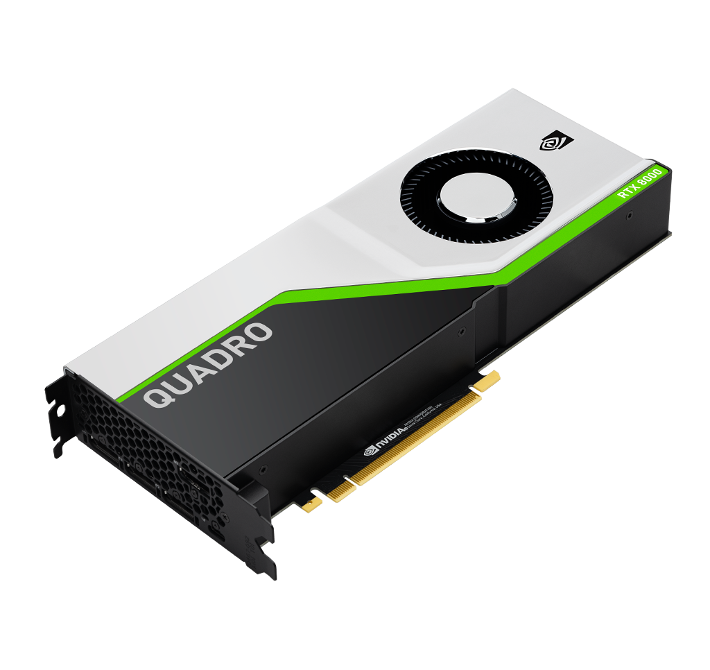

| FORM PEMBELIAN KOMPUTER DISINI!! |
NVIDIA Quadro RTX 8000
|
NVIDIA Quadro RTX 8000 adalah GPU profesional yang dirancang khusus untuk pekerjaan berat di bidang desain grafis, animasi, simulasi, dan komputasi ilmiah. Ditenagai oleh arsitektur Turing dan dilengkapi dengan 48GB GDDR6 VRAM, Quadro RTX 8000 mampu menangani tugas grafis intensif dan pemrosesan data besar dengan sangat efisien. GPU ini sering digunakan di stasiun kerja yang memerlukan keakuratan tinggi dalam rendering dan simulasi, seperti dalam produksi film, desain arsitektur, dan pengembangan kendaraan otonom. Dengan teknologi ray tracing dan AI yang canggih, Quadro RTX 8000 memungkinkan visual yang lebih realistis dan akselerasi tugas komputasi berbasis AI untuk aplikasi-aplikasi profesional. Fitur-fitur seperti NVIDIA RTX Server dan kemampuan untuk menangani banyak aplikasi berbasis VR juga membuatnya menjadi pilihan utama untuk pekerjaan profesional yang menuntut tingkat presisi dan performa yang sangat tinggi. Quadro RTX 8000 adalah pilihan ideal untuk pengguna yang membutuhkan lebih dari sekadar performa gaming, melainkan performa untuk penggunaan profesional dan industri yang sangat spesifik. |
 |